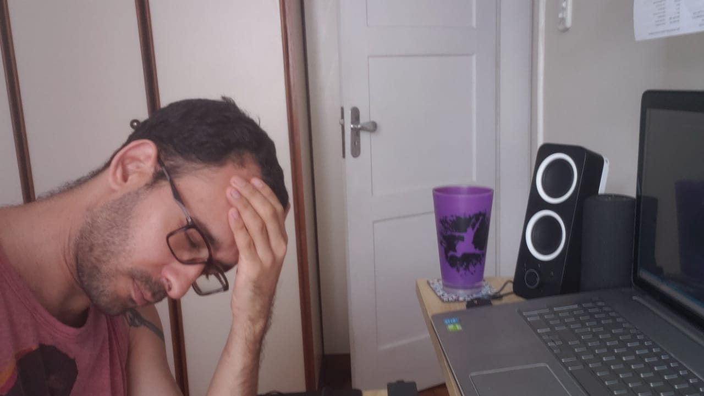

Tiago Nunes
Se tornando um Dev

Tiago quebrando a cabeça para aprender a codar
Vamos a uma breve história de como ele veio parar aqui
- 1986 - Nasceu em Salvador - Bahia
- 2011 - Se formou em Psicologia
- 2012 - Começou a trabalhar em Navio de Cruzeiros
- 2018 - Primeira vez que ia começar TI e não foi
- 2020 - Começou a estudar TI e está aqui fazendo este site